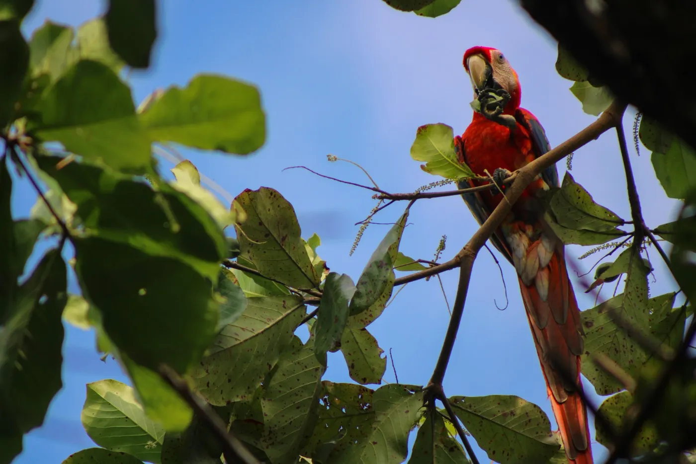
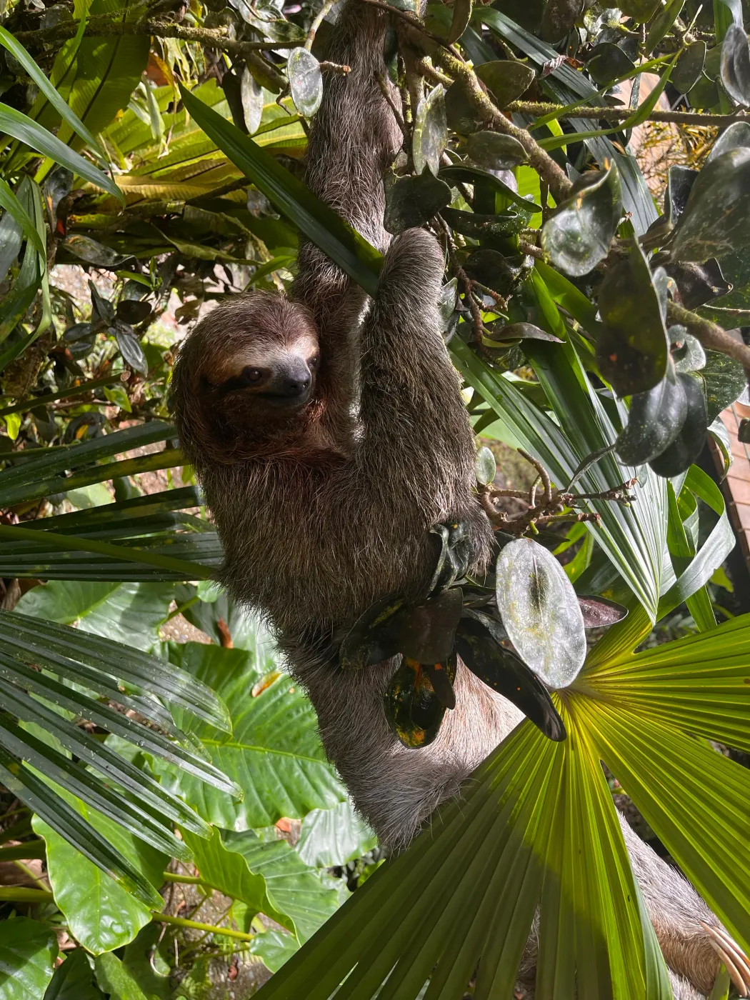
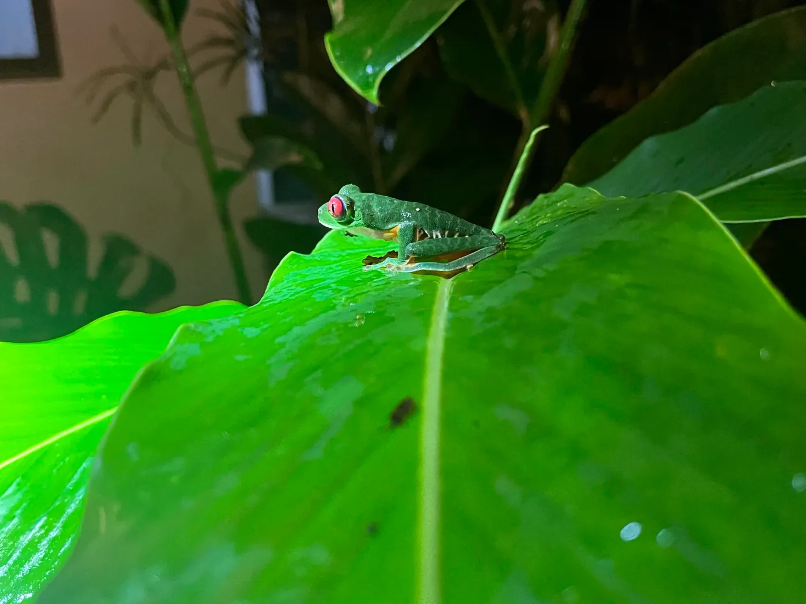
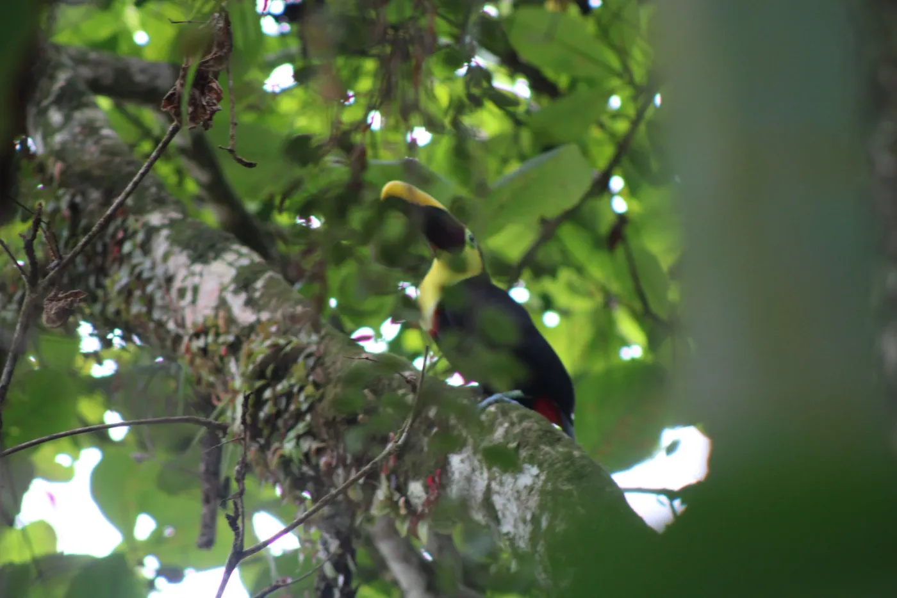
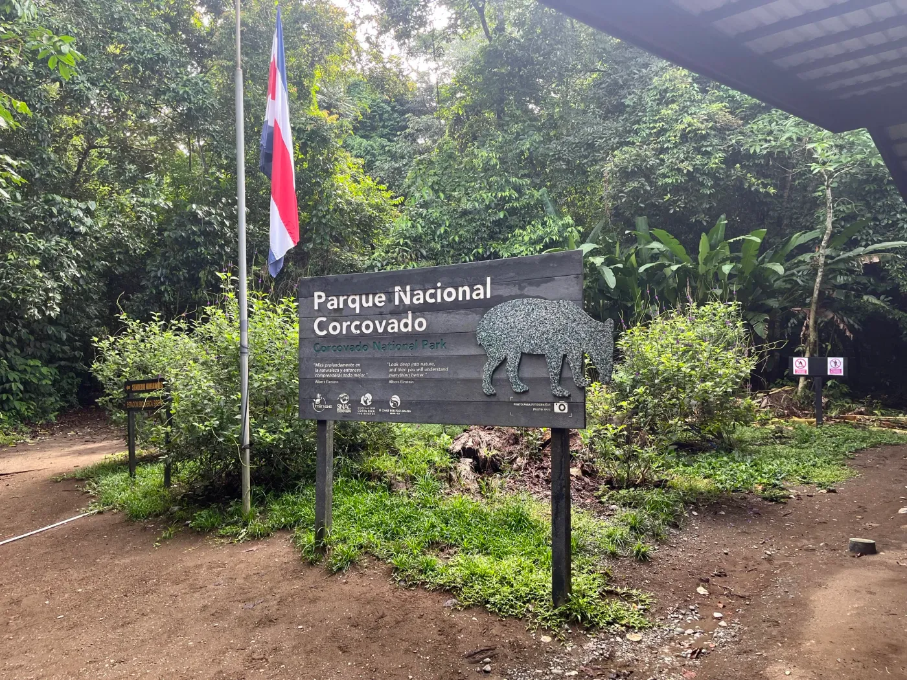
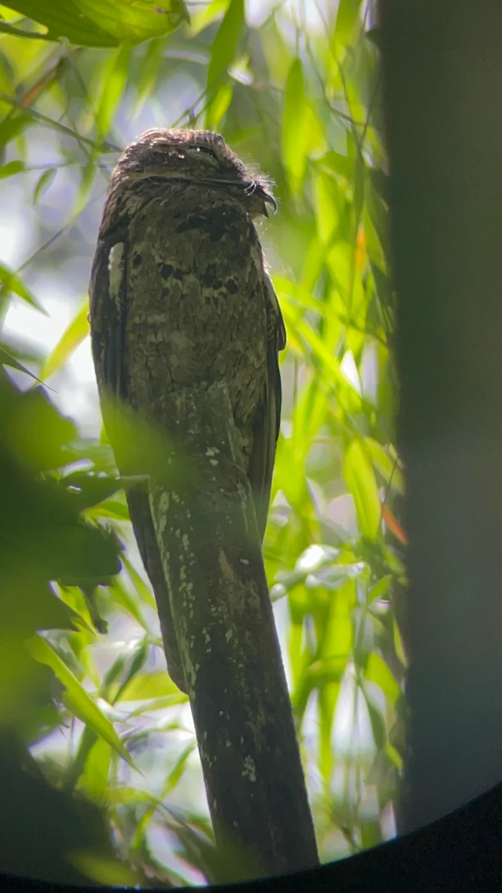

Aventura salvaje · Pacífico Sur
Parque Nacional Corcovado
Biodiversidad única y naturaleza inolvidable, en una de las últimas grandes selvas tropicales de Centroamérica.
La experiencia
Biodiversidad y vida silvestre
Corcovado es reconocido por su altísima biodiversidad: felinos, monos, tapires, aves y una vegetación exuberante conviven en un mismo ecosistema. Las caminatas se realizan siempre con guías autorizados y respetando las regulaciones del parque.
Rutas, horarios y permisos de ingreso dependen del operador y de las regulaciones vigentes del Sistema Nacional de Áreas de Conservación. Confirmamos estos detalles contigo antes de reservar.
Recomendaciones para tu visita
Estas son recomendaciones generales; no sustituyen las indicaciones oficiales del parque ni del operador del tour.
- Zapatos cerrados, ideales para senderos húmedos.
- Botella de agua reutilizable.
- Impermeable ligero.
- Ropa ligera y de secado rápido.
- Protección solar.
- Repelente de insectos.
- Mochila cómoda para caminatas largas.
Vida silvestre en Corcovado





